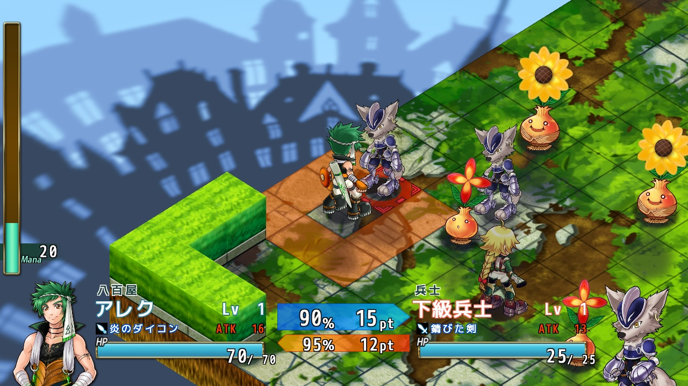
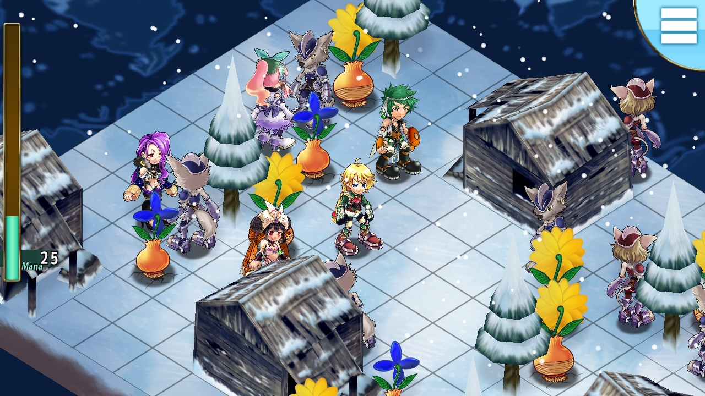
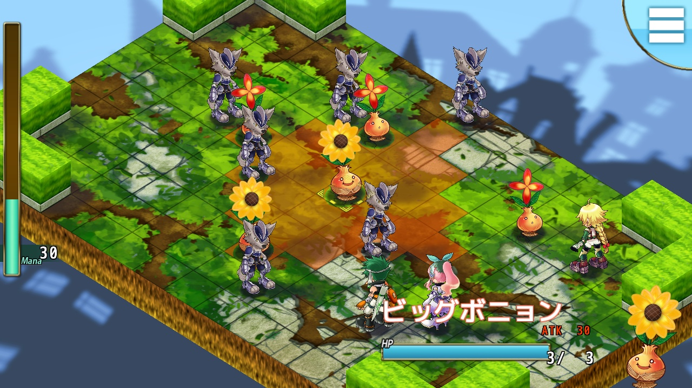
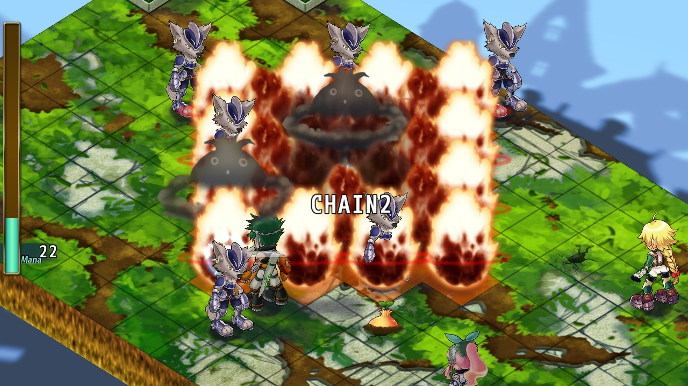
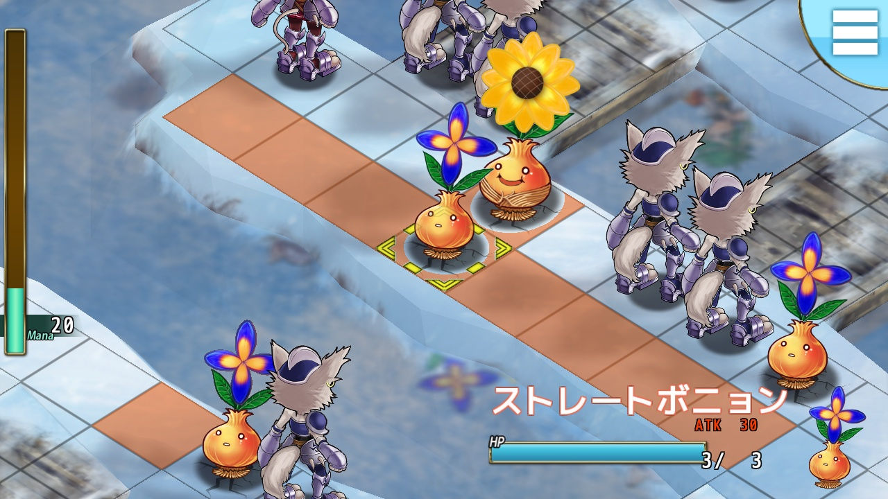
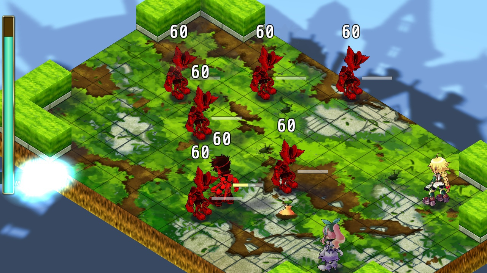
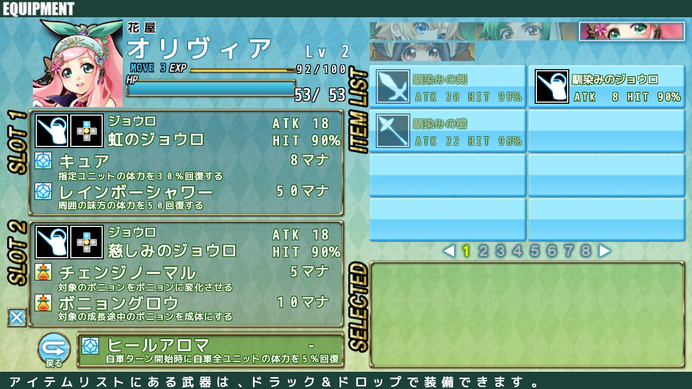
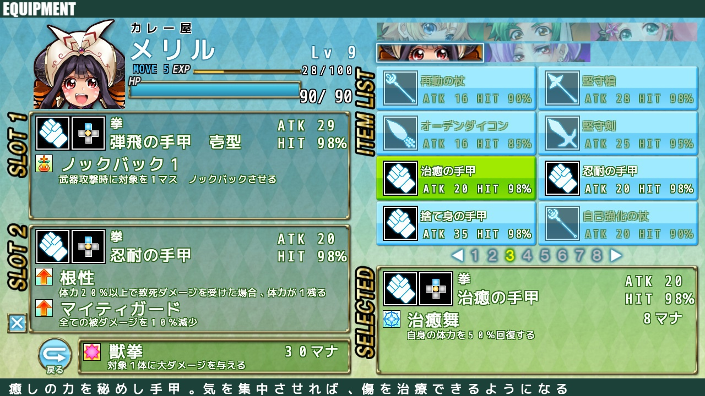
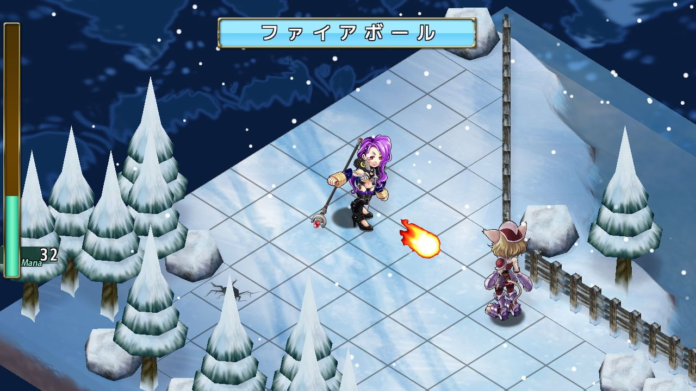
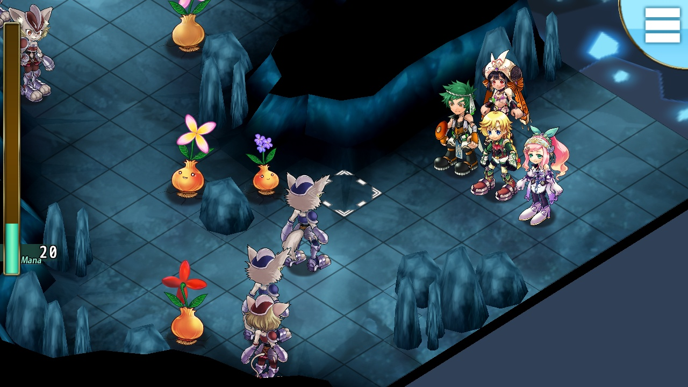

戦闘システム
ガーデンテイルは戦略性の高いクォータービューのシミュレーションRPGです。

マップの各地には爆弾のような植物【ボニョン】が点在しています。
ボニョンは刺激を与えると爆発し、周囲のユニットにダメージを与えます。

爆発時、周囲に他のボニョンがいると誘爆し、爆発連鎖が起きます。
連鎖数が多いほど爆発ダメージが上昇し、スキルの供給源になる【マナ】をたくさん取得することができます。

スキル
ユニットには固有のスキルが最大1個、装備武器にそれぞれ最大2個のスキルを持たせることができます。

常時発動するもの、敵にダメージを与えるもの、ボニョンを操作するものなど様々なスキルがあります。
ステージごとに最適な武器を選び、敵を迎え撃ちましょう。
